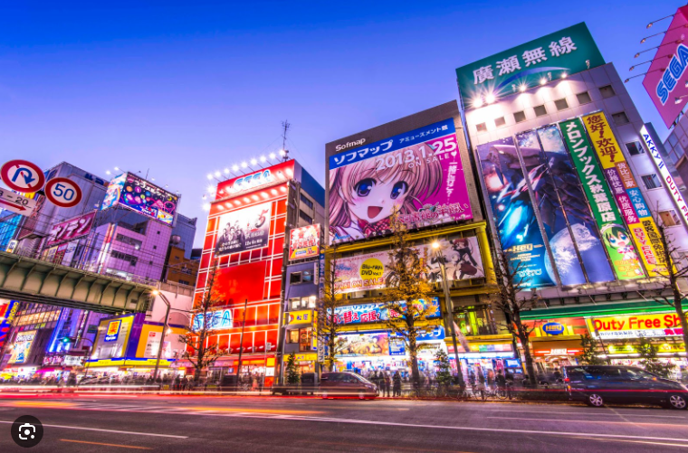
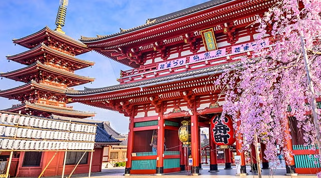
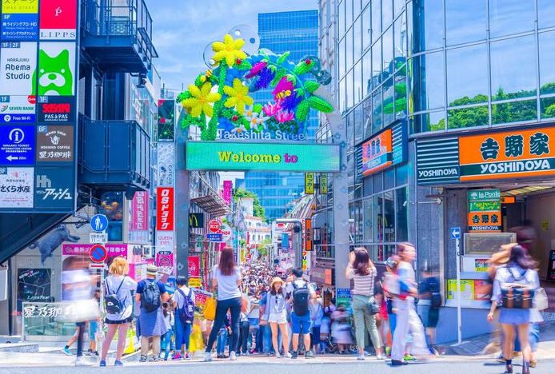
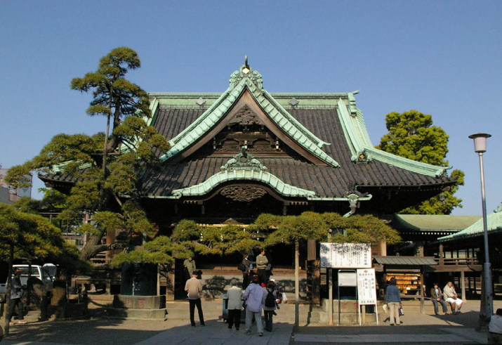
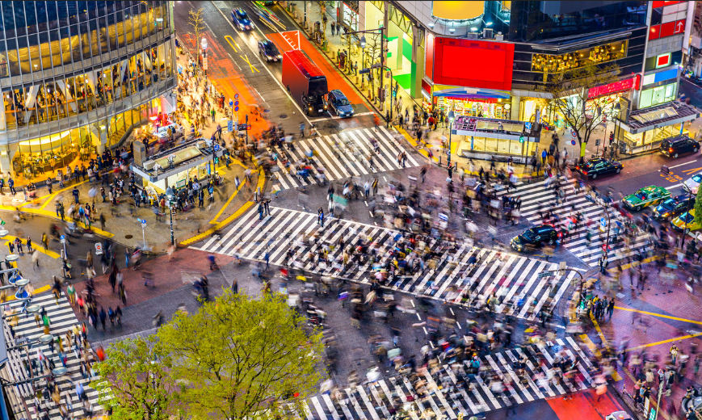
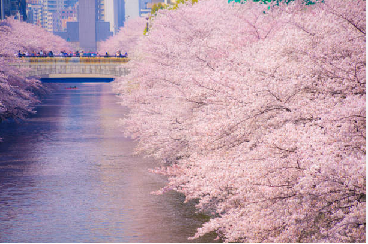
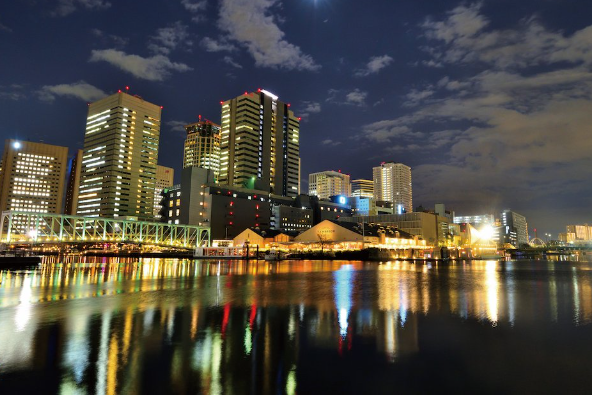

¿Que visitar en TOKIO?
La ciudad de Tokio supone uno de los lugares más estimulantes del mundo. Un collage de contrastes, neones y locales pintorescos que conviene descubrir con calma, saboreando y viviendo cada momento siempre que tengamos en cuenta qué nos ofrece cada lugar de la capital japonesa. Para ello, te guiamos a través de los mejores barrios de Tokio y más auténticos.
Akihabara
Conocida también por ser la meca de la cultura Otaku o el barrio electrónico por excelencia. Nos encontramos en un barrio en el centro de Tokyo repleto de tiendas de electrónica, el paraíso para los aficionados a cacharrear con todas las cosas que funcionen con electricidad, aunque… eso podríamos decir que era antes. Akihabara sigue siendo un barrio repleto de estas tiendas, circuitos y todo lo que te puedas imaginar; desde hace unos años esto ha cambiado radicalmente dando cabida a la cultura otaku y floreciendo cientos de tiendas de esta temática y de videojuegos haciendo a un lado a la «antigua Akihabara».
Asakusa
Asakusa conserva la atmósfera del Tokio antiguo con tradicionales tiendas de artesanía, puestos de comida en la calle Nakamise y el ancestral templo Sensō‑ji. El parque de atracciones Hanayashiki data de mediados del siglo XIX y ofrece emocionantes atracciones y cafeterías. El parque ribereño Kuritsu Sumida suele acoger festivales y espectáculos pirotécnicos. La zona está jalonada de izakayas informales y restaurantes de yakitori que sirven cerveza y brochetas a la parrilla.
Harajuku
El animado barrio de Harajuku es famoso por su pintoresco arte callejero y la moda que inunda sus calles, con tiendas originales de ropa vintage y cosplay en Takeshita Street, así como boutiques exclusivas más tradicionales en la frondosa Omotesando Avenue. En los alrededores hay bares pequeños y cafeterías modernas. Entre los puntos de interés cultural destaca el Watari Museum of Contemporary Art, que alberga innovadoras exposiciones temporales.
Katsushika
Katsushika es un barrio especial de la Metrópolis de Tokio, en Japón. En otros idiomas, es común que se autodenomine "Ciudad de Katsushika". En 2008, la población era de 429.289 habitantes, con una densidad de 12.320 personas por km², en un área de 34,84 km².
Shibuya
Shibuya es uno de los barrios de Tokio que marcan tendencias. Sus grandes centros comerciales y las innumerables tiendas de moda hacen que Shibuya compita con Harajuku como el barrio más "fashion" de la ciudad. Para conocer la zona nada mejor que ir al anochecer y callejear por las calles más luminosas y atestadas de gente. La calle más famosa es Center Gai.
Nakameguro
Nakameguro es un moderno barrio residencial. Tranquilos senderos flanquean el río Meguro y, cuando florecen los cerezos en primavera, las ramas forman túneles de flores. Las tiendas alternativas venden zapatillas personalizadas y libros de arte. Para ver obras de arte, hay galerías y museos, como el Museo de Escultura Contemporánea, que expone estatuas sorprendentes de aspecto inquietante. En las callejuelas adyacentes se agrupan cafeterías de moda que tuestan su propio café, cervecerías de elaboración propia y gastropubs de cocina japonesa.
Shinagawa
Shinagawa es una ajetreada zona junto a la bahía. Es conocida por Tennozu Isle, un complejo de rascacielos que cuenta con un paseo, tiendas, una refinada cervecería de elaboración propia y restaurantes con vistas al agua. Uno de los puntos de más tradición es el elegante templo Sengaku‑ji, donde reposan los restos de 47 samuráis del siglo XVIII. Alegres puentes cruzan el río Meguro, flanqueado por cerezos. En el parque de Shinagawa hay un acuario y zonas para hacer pícnics.